Zabbix Web管理画面 初期設定¶
はじめに¶
本ドキュメントは、ZabbixサーバのWeb管理画面の初期セットアップ手順を記述したものです。
Web管理画面 設定手順¶
注釈
本手順は Zabbix 3.2.x が正常にインストールされた状態を想定して書かれています。
1. Welcome to Zabbix
- 「Next step」をクリックします。
- 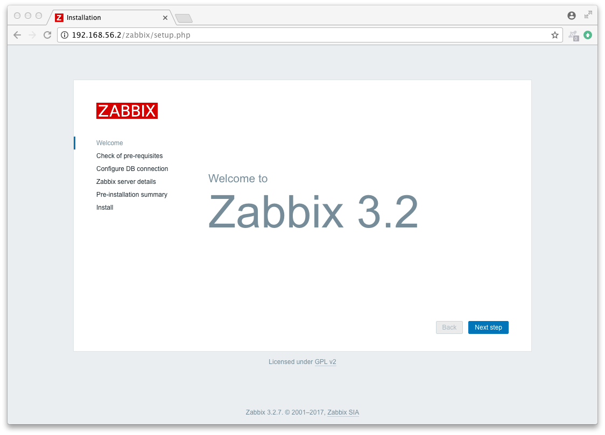
2. Check of pre-requisites
- 全ての項目がOKになっていることを確認し、「Next step」をクリックします。
- 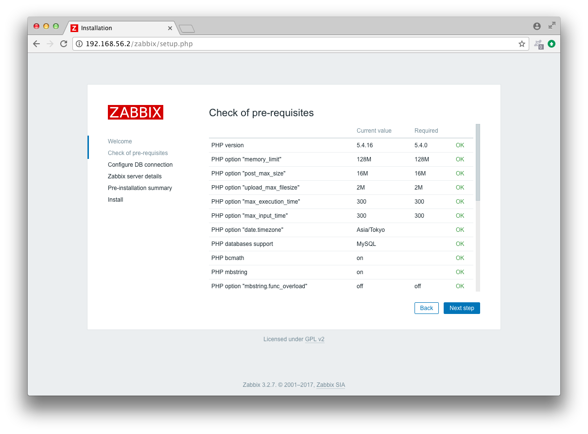
注釈
php.ini ファイルのtimezone設定がされていない場合、ここでエラーが表示されます。
timezoneにAsia/Tokyoを設定し、zabbix-serverプロセスを再起動してリトライしてください。
3. Configure DB connection
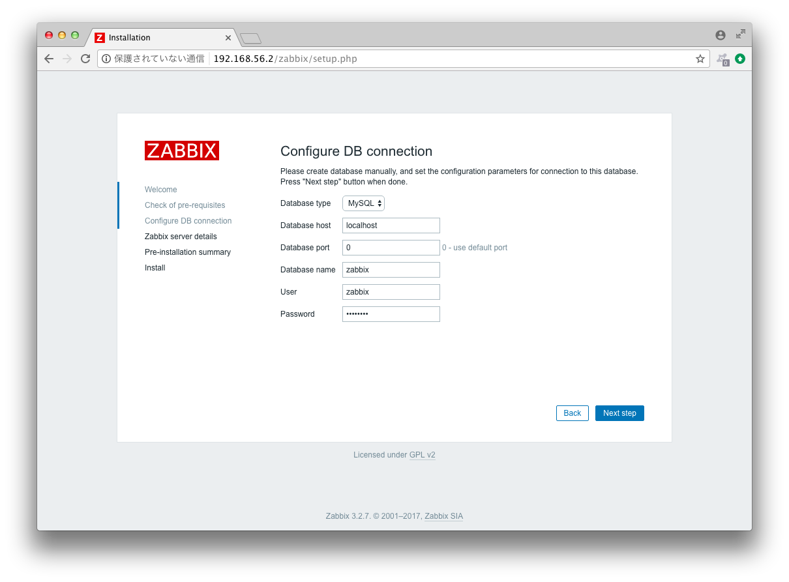User を zabbix に修正し、DBに設定したzabbixユーザのパスワードを入力します。「Next step」をクリックします。
注釈
Datebase name 以下3項目は、zabbix_server.confにて修正した3行に対応しています。
4. Zabbix server details
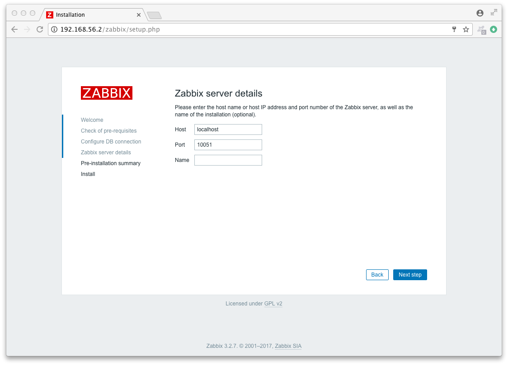Name 欄に、今回Zabbixサーバーとして使用するサーバのIPアドレスを入力し、「Next step」をクリックします。
5. Pre-installation summary
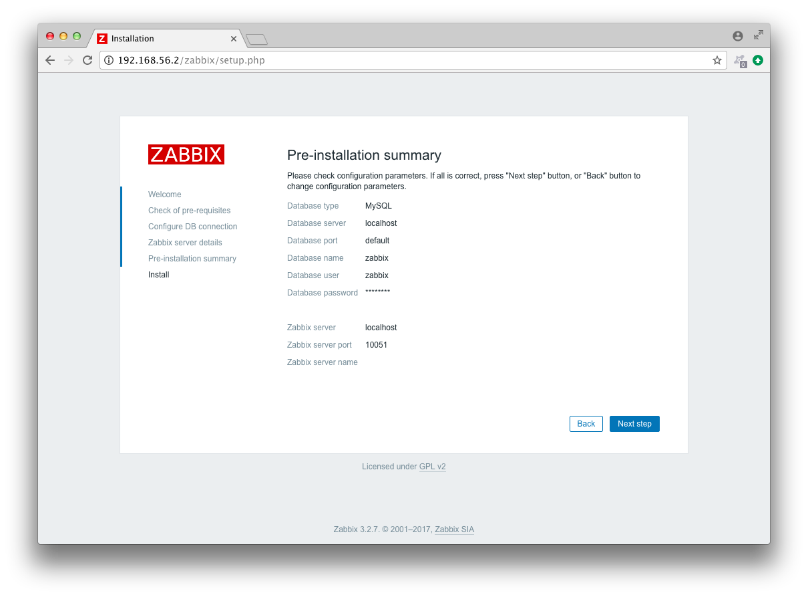すべての項目に間違いがないか確認し、「Next step」をクリックします。
6. Install
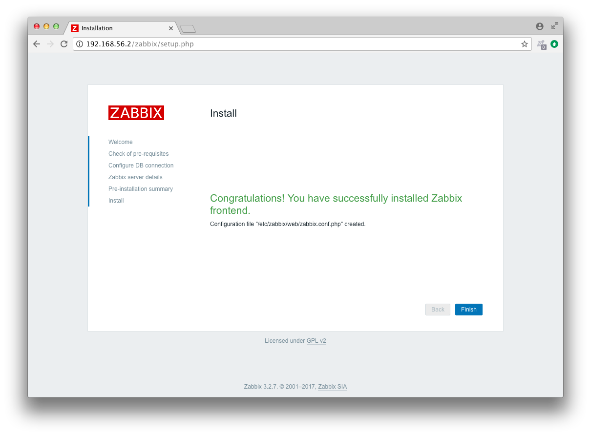以下画面が表示されたら、「Finish」をクリックします。
7. ログイン
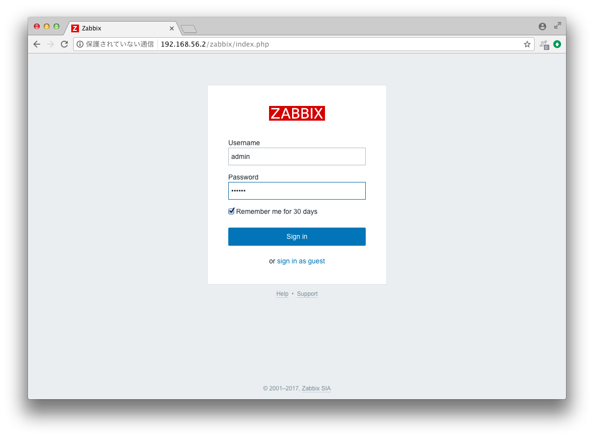ダッシュボードへのログイン画面が表示されます。Zabbixサーバにデフォルトで登録されている下記特権管理者ユーザでログインします。Username: adminPassword: zabbix
8. ダッシュボード
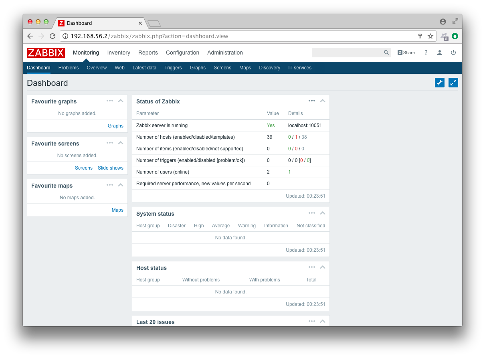ダッシュボードが表示されます。
注釈
「Zabbix server is running」が「Yes」担っていない場合、サーバーとして正常稼働できていません。
以下の点を確認しましょう。
- zabbix_server.confの内容
- zabbix-serverプロセスの再起動
- mysqldプロセスの再起動
- mysqlのzabbixユーザ権限設定
Web管理画面 デザイン変更¶
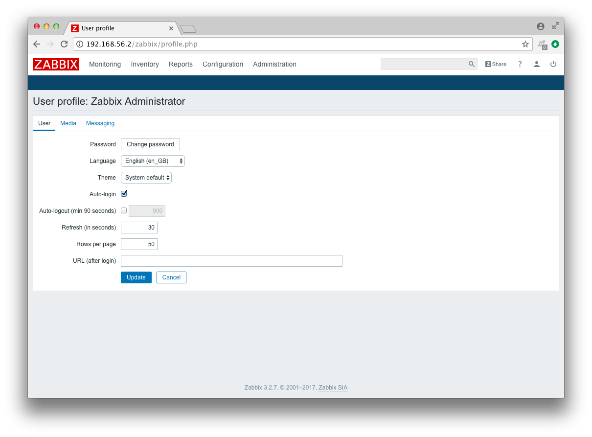管理画面は表示言語と背景色を変更する事が可能です。変更するためには、まずダッシュボード画面から右上のUser profileアイコンをクリックします。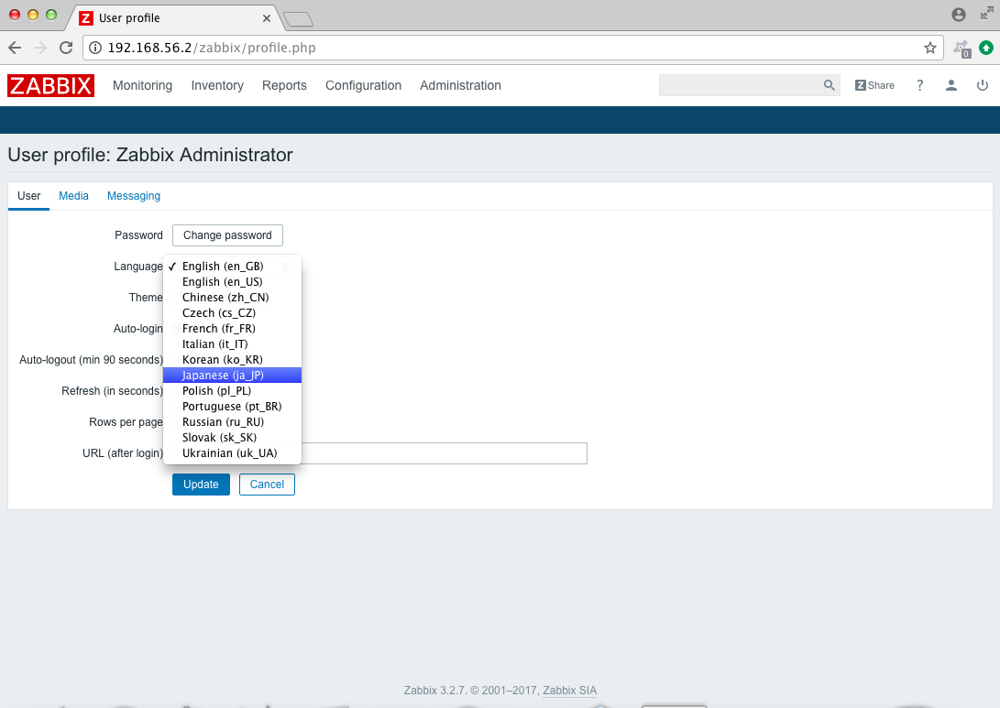LanguageのプルダウンからJapanese(jp_JP)を選択します。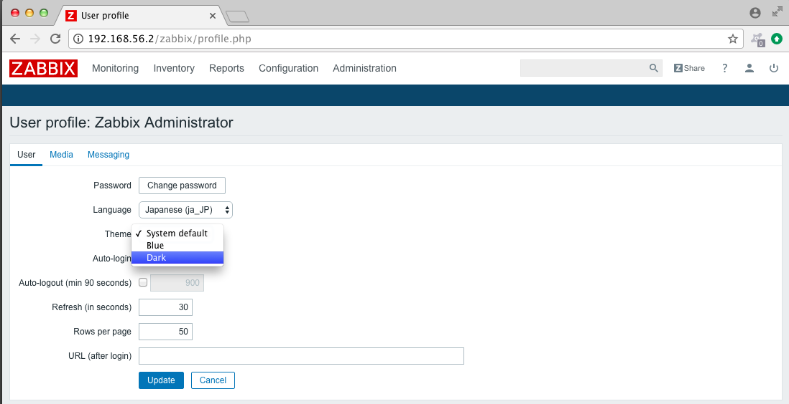ThemeのプルダウンからDarkを選択し、Updateをクリックします。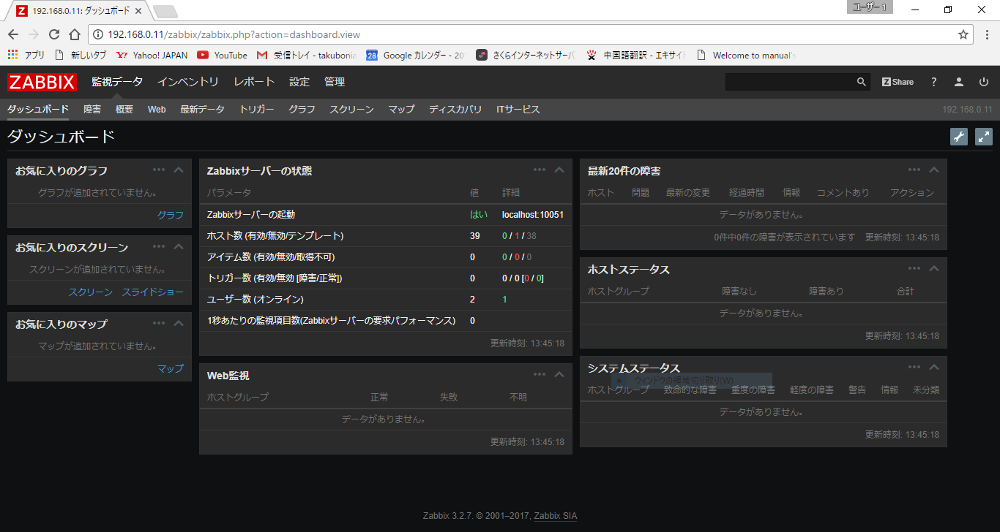管理画面の表示言語が日本語となり、背景色が黒く変更されます。